10 años convocando a la próxima generación
10° Simposio Argentino de Jóvenes Investigadores en Bioinformática, organizado por RSG Argentina.
Cuándo
9 y 10 de octubre
Dónde
Rafaela, Santa Fe
Modalidad
Presencial
Dos días: talleres presenciales y virtuales el primero, charlas y keynotes en la Universidad Nacional de Rafaela el segundo.
9 de octubre · 14 a 18 hs
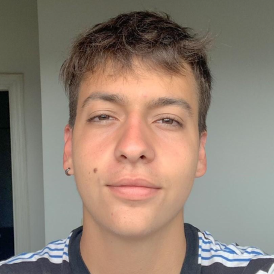
Campus UNRaf
Miguel Ángel De Lillo — Club de Datos, FCEN-UBA
Un taller para descubrir cómo las buenas prácticas de programación pueden transformar tu forma de trabajar en proyectos de Ciencia de Datos.
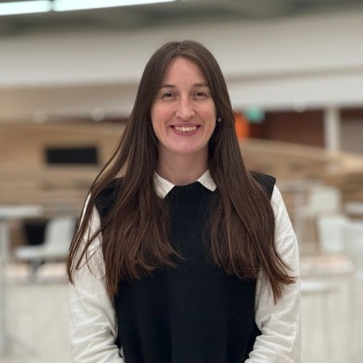
Campus UNRaf
Mercedes Didier Garnham — IIB, EByN, UNSAM
Ideal para quienes quieran explorar representaciones moleculares, RDKit, descriptores y fingerprints.
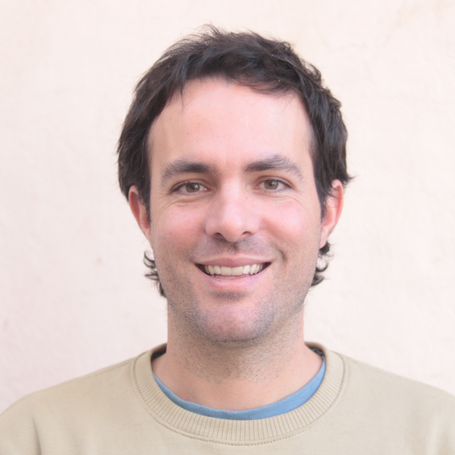
Virtual
Exequiel Barrera — IHEM-CONICET
Un espacio para introducirse al docking molecular: desde la búsqueda de compuestos hasta el uso de Autodock Vina y el análisis de resultados.
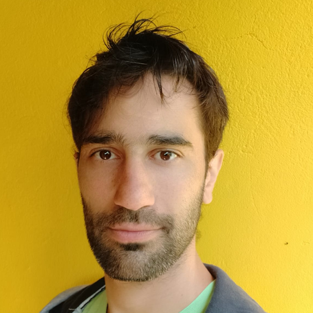
Campus UNRaf
Leandro Matías Sommese — CONICET, UNQ
Un recorrido práctico por las herramientas de análisis y manipulación de imágenes digitales aplicadas a bioinformática estructural de proteínas.
10 de octubre · Universidad Nacional de Rafaela — C. Colectora, S2300 Rafaela, Santa Fe
8:00 – 8:30
Acreditación y colgado de pósters
8:30 – 9:00
Apertura del Simposio
9:00 – 9:20
Lucas Abbate
9:20 – 9:40
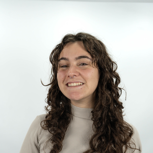
Delfina Perez
9:40 – 10:00
Coffee break ☕
10:00 – 10:20
Nicolás Pérez Mauad
10:20 – 10:40
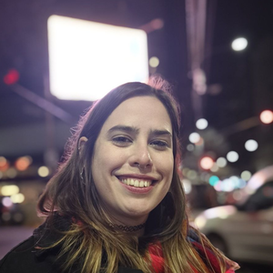
Lucía Ortiz Rocca
10:40 – 11:40
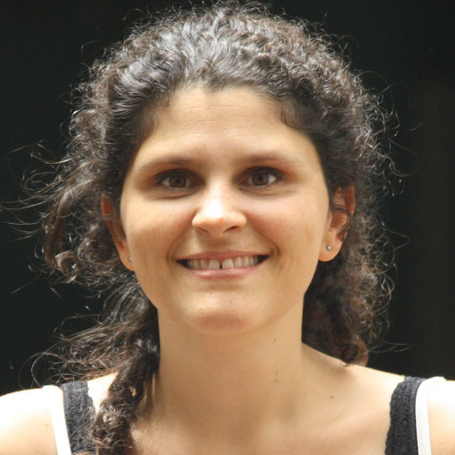
Keynote ✨
CONICET
Bioinformática Estructural al Sur del Atardecer
Un recorrido por la bioinformática estructural construida desde el sur del mundo. Una individualidad dentro de un contexto y una comunidad. Desde las profundidades de las subestructuras proteicas hasta el impacto del mundo moderno en la salud humana. A lo largo de esta charla, exploraremos la relación entre la estructura y función proteica, su influencia en el diseño de fármacos y cómo estas conexiones se reflejan en la fisiología celular.
¿Se puede construir ciencia desde el sur? ¿Se puede construir una carrera científica descolonial, comunitaria y anti-extractivista?
Este recorrido busca no solo ofrecer una visión técnica, sino también promover una visión crítica sobre cómo la ciencia puede ser un instrumento para la transformación social y ecológica desde las voces del sur global.
11:40 – 12:10
Sponsor charlas
12:10 – 13:00
Almuerzo libre
13:00 – 14:30
Sesión de pósters
14:30 – 14:50
Matías Eduardo Rizzo
14:50 – 15:10
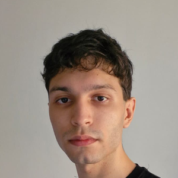
Santiago Britez
15:10 – 16:10
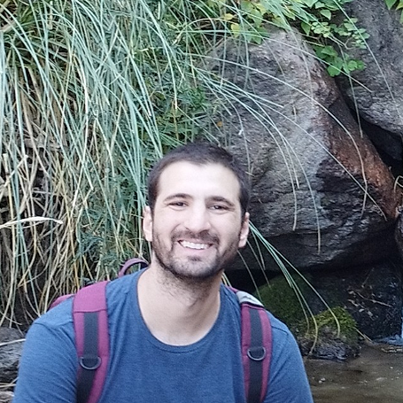
Keynote ✨
Instituto de Investigación de la Cadena Láctea (INTA-CONICET), Universidad Nacional de Rafaela (UNRaf)
Aplicaciones metagenómica en el sector agroindustrial
Los avances en las técnicas de secuenciación han revolucionado la microbiología, permitiendo estudiar una gran parte de la diversidad microbiana que no ha sido accesible mediante técnicas basadas en cultivos.
La metagenómica no solo ha abierto la puerta a la identificación de nuevas especies microbianas, sino también a comprender su rol en la comunidad microbiana y su relación con el ambiente.
En esta charla se abordarán 2 ejemplos de estudios metagenómicos relacionados con el sector agroindustrial. En primer lugar, el estudio de comunidades microbianas en lagunas de estabilización como fuente de enzimas de interés para la industria láctea. En segundo lugar, el uso de secuenciación en tiempo real para la identificación y caracterización rápida de patógenos bovinos.
16:10 – 16:30
Coffee break ☕
16:30 – 17:30
Mesa redonda
17:30 – 18:30
Cierre del 10SAJIB, entrega de premios y resultados del Hackatón
Organizan
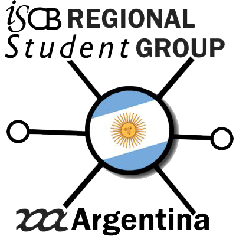
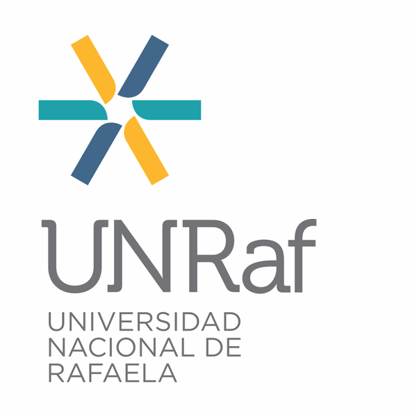